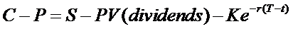

According to Black-Scholes theory, European options obey the following relationship, known as Put-Call Parity:

where:
C - call value
P - put value
S - stock price
K - shared strike price
T - expiration date of both options
t - current date
r - risk free rate
PV - the Present Value function
- the present value of the strike price, i.e.
A more complex relationship exists between two options that don’t have the same expiration date, but the real problem is that the early exercise premium associated with American options causes this neat Put-Call parity relationship to break down. Since traded options are American style, no accurate analytical model exists to accurately assess Put-Call Parity for traded options.
Note, regarding StrategyExplorer:
Given the foregoing, it should be clear that StrategyExplorer is not appropriate for accurately evaluating arbitrage opportunities. Even if an exact relationship existed for American options, StrategyExplorer plots intrinsic option values, deliberately ignoring extrinsic value attributed to the present value of the strike and dividends. Conversions and Reversals are therefore included in StrategyExplorer primarily for the sake of completeness.